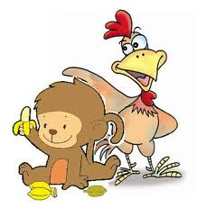

KOMPETENSI DASAR
KOMPETENSI DASAR
3.11. Mengidentifikasi informasi tentang fabel/legenda daerah setempat
yang dibaca dan didengar.
4.11. Menceritakan kembali isi fabel/legenda daerah setempat.
3.12. Menelaah struktur dan kebahasaan fabel/legenda daerah setempat
yang dibaca dan didengar.
4.12. Memerankan isi fabel/legenda daerah setempat yang dibaca dan
didengar.
